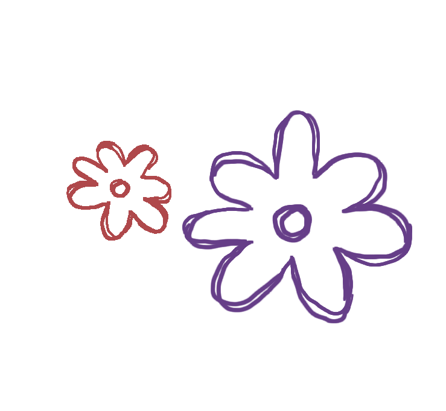
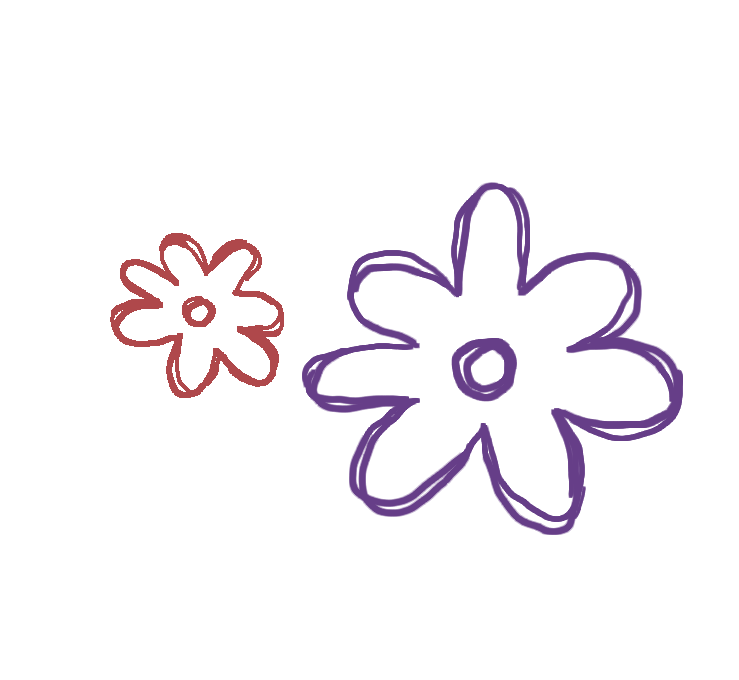
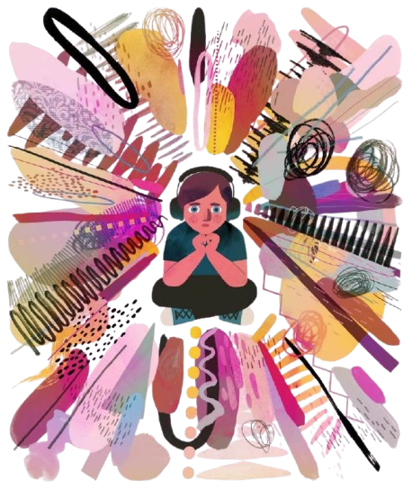
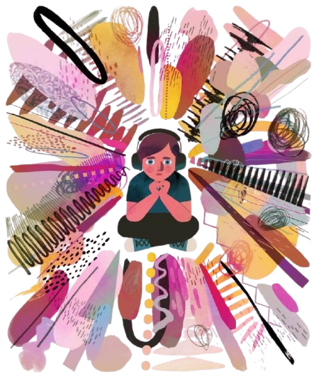
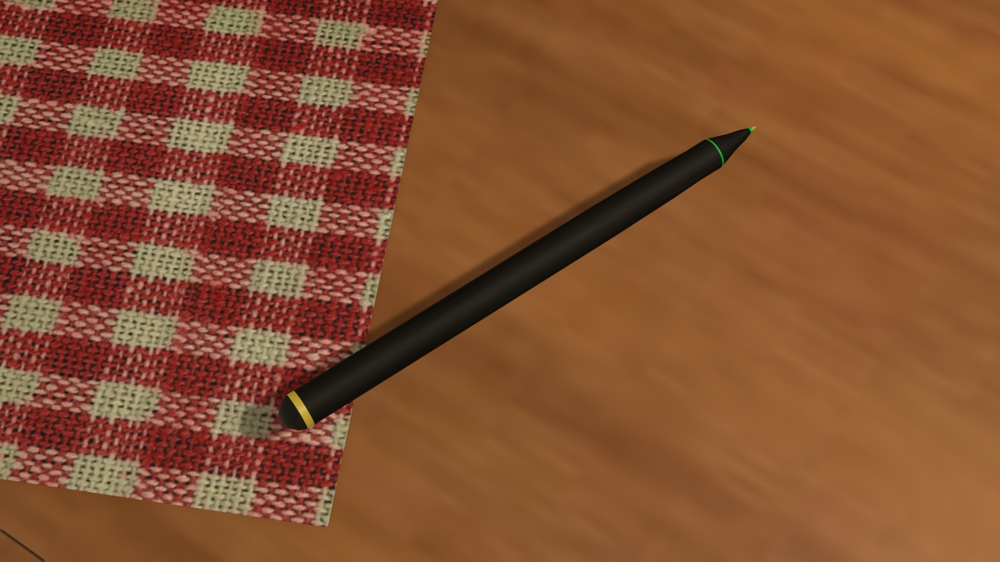
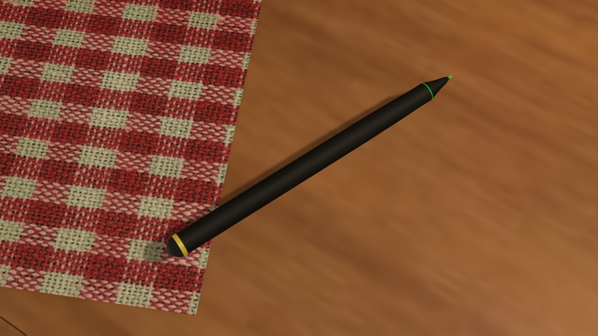
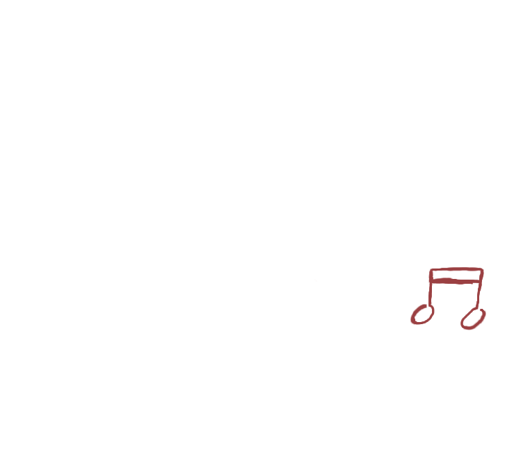
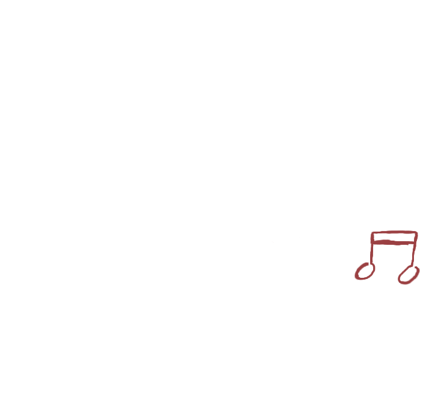
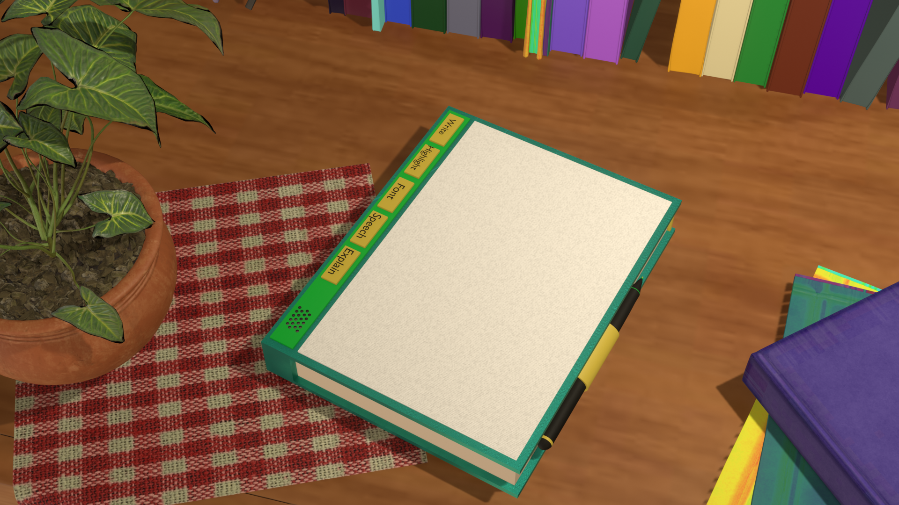
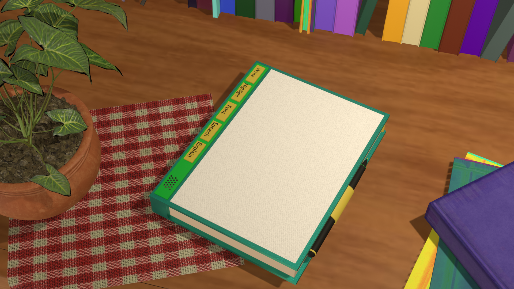

 If a child can't learn the
way we teach,
If a child can't learn the
way we teach,
maybe we should teach the way they learn.


OUR
GOAL
Vivlio Sagesse, an AI-oriented gadget is aimed to make learning easy for specially-abled people.
While it is mainly aimed to help those with neurological-disorders i.e dyslexic, dysgraphic,
dyscalculic but it also can be utilized by others.
To fully understand the function of this gadget, we firstly need to understand what actually are the problems
people with neurological-disorders face.
They face issues in understanding, text, sounds and fundamental
numerical concepts. Over the years a lot of AI-based tools have been created to help them
learn, but never have they ever been integrated
into their daily activities. Let’s take a look at each of these
disorders and how Vivlio Sagesse would help them.

 



Dyslexia
You must have heard that people with dyslexia see words dancing, inverted and have problems navigating
lines which is absolutely NOT TRUE! It is a pure myth.
The ‘symptoms of dyslexia’ that you have heard
of are actually symptoms of VPD (Visual processing disorder). These two terms are often confused
because of their co-occurrence i.e. the dyslexic are often found to have VPD, which is more
recognisable than dyslexia. Moreover, dyslexia is a phonological processing disorder. This
means the dyslexic finds problems recognising sounds well. However, it certainly does not mean
that they cannot speak well. They just have problems speaking unfamiliar, long words. For eg.
Unorganised: un+or+gan+i+sed.
This device however, can make learning really easy for them by
font-specialisation, customised colour layers and text
to speech.


_2.png)
Dysgraphia
There are two categories of this disorder- Language-based dysgraphia and Motor dysgraphia.
Like dyslexia, motor dyslexia involves phonological functioning issues while language-based
does not. However, it does involve low spatial awareness and weak hand coordination.
Low spatial awareness causes spacing/shape/size of letters or worthwhile poor hand co-ordination causes inverted/mirror
handwriting. This symptom, we are sure you have heard before but known it as the dyslexic one.
This is because dysgraphia is also often confused with dyslexia and they also frequently co-occur.
The dysgraphic also will hugely benefit from this model as it uses text to speech and
visualisation tools.

Dyscalculia
Dyscalculia is a neurological disorder in which a person has
problems understanding the fundamental mathematical concepts like
money matters, simple addition, subtraction or problems memorising
tables as easy as that of 2.
Sometimes, it is at such a level that
they are unable to comprehend a thing as simple as that 5 is greater
than 3 or what are numbers! It also often co-occurs with dyslexia and dysgraphia.
Visualisation tools such as 3D or practical explanation of mathematical concepts can
help them build conceptual understanding, which are also integrated in our product.
FUNCT
IONING

 

Stylus:
It is the ‘Input Device’ to help you interact with all the tools. It functions like a normal stylus that helps you scroll, select, change page etc. The stylus is
mainly designed to make certain things such as highlighting easy as finger may cause problems in navigating lines
for the dysgraphic etc.
Also, it helps the dysgraphic do their writing practice!
 


Book:
This book is works like tablets but does not affect your eyes like one. This being said, it is also not like Kindles
which use E-ink technology. Vivlio Sagesse uses rear view projection which does not affect your eyes at all.
It also has a button/control panel where you can toggle between tools and functions of the stylus. This book is connected to both the AI
system and the stylus by the tri-bluetooth system, helping you to keep in sync.
AI model:
This is the brain of Vivlio Sagesse, it is fed the data of a class/grade/standard of a said year by inserting a chip. This chip is changeable i.e. after the course’s
end you can change the chip which contains all the data of a said course/year.
This course consists of all the book pdf’s freely available online e.g. NCERT and other books can be
purchased online too which will be added to the data. However, the purchases(only educational tools)
may take place online but the learner would not be able to access the social media
by any other way as it is a great distraction to the learners.
How will AI work on this data?
1. Explanation of any page/phrase/sentence/new or simplification will be purely done by
AI. It enables one to select certain text and provied various options- simplify, explain with example, visual
explanation with model, visual practical explanation.
2. Text to speech helps them understand how a written word is pronoun
ced. They can access this service by a simple select of any word/phrase/pag
e on their screens with the help of their stylus and the series of buttons on the book.
3. Font-customisation is a useful ser
vice for both dysgraphic and dyslexic as different people are comforta
ble with different fonts.You just have to click the button ‘Change font’ and voila, you have various font o
ptions to choose from on the screen!
The AI will learn with experience about their preferred fonts and also help them get comfort
able with other fonts by changing into different fonts.
4. It also gives the dysgraphic writing practice by giving them words
to trace in different ways and evaluating their accuracy after every trial. They can access
this feature by selecting the text they want to learn to write and click on the button ‘write’
The model makes different visual presentations of the selected texts and shows it to the user, then gives it to be traced and then finally to write!


Product
Design
Here is a full-fledged video and photo of our future product.
Peep into a new Era!
 
